(Richard Sabey)
Given such a digraph, can it be realized by a chess position in which the points represent chess pieces (no pawns), and there is an arrow from A to B only if piece A attacks piece B? If so, what is the smallest chessboard (in terms of area) on which this can occur?
The same questions can be asked for 3-regular digraphs, though they may be hard to count, and even harder to realize with chess positions. Can you show that no 4-regular digraph is realizable with a chess position?
| 2 | 3 | 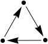 | 4 | 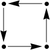 | 5 |
| 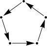 | ||
| 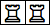 | 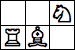 | 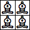 | 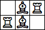 | 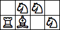 (Richard Sabey) | 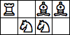 |
| 6 | 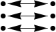 | 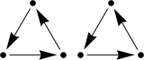 | 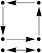 | 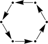 | 7 | 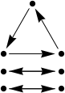 | 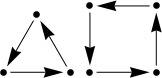 | 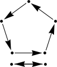 | 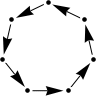 |
| 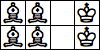 | 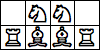 | 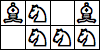 (Andrew Bayly) | 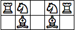 | 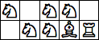 (Andrew Bayly) | 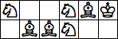 (Joe DeVincentis) | 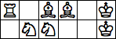 (Andrew Bayly) | 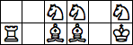 (Andrew Bayly) |
| 8 | 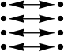 | 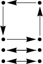 | 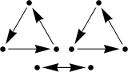 | 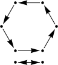 | 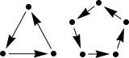 | 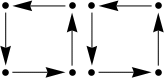 | 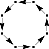 |
| 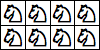 (Andrew Bayly) | 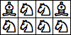 (Andrew Bayly) | 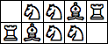 (Andrew Bayly) | 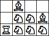 (Maurizio Morandi) | 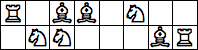 (Andrew Bayly) | 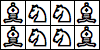 (Andrew Bayly) | 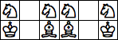 (Andrew Bayly) |
| 9 | 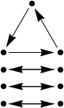 | 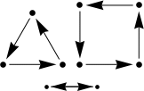 | 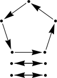 | 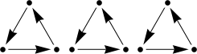 | 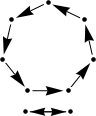 | 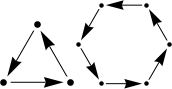 | 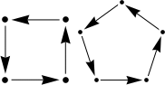 | 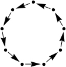 |
| 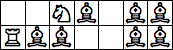 (Andrew Bayly) | 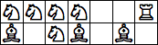 (Andrew Bayly) | 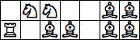 (George Sicherman) | (George Sicherman) | (Andrew Bayly) | (Andrew Bayly) | (Andrew Bayly) | (Andrew Bayly) |
Joe DeVincentis showed that the number of 1-regular digraphs is A002865 at the OEIS.
Joe Devincentis showed that every 1-regular digraph can be realized as a chess position.
| 3 | 4 | 5 | ||||||||
(Maurizio Morandi) | 
| none |
| 6 | |||||||
(Maurizio Morandi) | (Andrew Bayly) | (Andrew Bayly) | none (Joe DeVincentis) |  (Maurizio Morandi) |
| 6 | 
| |||||||
(Maurizio Morandi) | (Maurizio Morandi) | (Maurizio Morandi) | (Maurizio Morandi) |
| 6 | 
| 
| 
| |||||
(Maurizio Morandi) | ? | ? | ? | (Mark Thompson) | none (Mark Thompson) | (Joe DeVincentis) | (Mark Thompson) |

| (Dave Langers) | 
| (Dave Langers) | (Dave Langers) |  (Dave Langers) | (Dave Langers) |  (Dave Langers) |
Here are some 3-regular graphs realized by only knights, one of which comes from February 2007 Math Magic:
(Maurizio Morandi) |  (Maurizio Morandi) | (Maurizio Morandi) |
 (Maurizio Morandi) | (Maurizio Morandi) |
Most 3-regular digraphs with one or more directed edges can not be realized with chess positions. Here are a few that can be, using only queens and knights. Can you find any others?
(Maurizio Morandi) |  (Maurizio Morandi) | (Maurizio Morandi) | (Maurizio Morandi) | (Maurizio Morandi) |
(Maurizio Morandi) | (Maurizio Morandi) | (Maurizio Morandi) | (Maurizio Morandi) | (Maurizio Morandi) | (Maurizio Morandi) | (Maurizio Morandi) |
(Maurizio Morandi) | (Maurizio Morandi) | (Maurizio Morandi) | (Maurizio Morandi) | (Maurizio Morandi) | (Maurizio Morandi) |
Here are some others that use different pieces too:
(Maurizio Morandi) | (Maurizio Morandi) | (Maurizio Morandi) | (Maurizio Morandi) | (Maurizio Morandi) |  (Maurizio Morandi) | (Maurizio Morandi) |
(Maurizio Morandi) | (Maurizio Morandi) | (Maurizio Morandi) |  (Maurizio Morandi) | (Maurizio Morandi) | (Maurizio Morandi) | (Maurizio Morandi) |
(Maurizio Morandi) | (Maurizio Morandi) | (Maurizio Morandi) | (Maurizio Morandi) | (Maurizio Morandi) | (Maurizio Morandi) | (Maurizio Morandi) |
(Maurizio Morandi) | (Maurizio Morandi) | (Maurizio Morandi) | (Maurizio Morandi) | (Maurizio Morandi) |
(Maurizio Morandi) | (Maurizio Morandi) | (Maurizio Morandi) |  (Maurizio Morandi) |  (Maurizio Morandi) |
(Maurizio Morandi) | (Maurizio Morandi) | (Maurizio Morandi) | (Maurizio Morandi) | (Maurizio Morandi) |
(Maurizio Morandi) | (Maurizio Morandi) | (Andrew Bayly) |  (Maurizio Morandi) |
 (Geoff Exoo) | (Geoff Exoo) | (Joe DeVincentis) | (Maurizio Morandi) |
Here are some with directed edges, using queens and knights:
 (Maurizio Morandi) | (Maurizio Morandi) | (Maurizio Morandi) | (Maurizio Morandi) |
(Maurizio Morandi) | (Maurizio Morandi) | (Maurizio Morandi) |
(Maurizio Morandi) | (Maurizio Morandi) | (Maurizio Morandi) |  (Maurizio Morandi) | (Maurizio Morandi) |
(Maurizio Morandi) | (Maurizio Morandi) | (Maurizio Morandi) | (Maurizio Morandi) | (Maurizio Morandi) |
(Maurizio Morandi) | (Maurizio Morandi) | (Maurizio Morandi) | (Maurizio Morandi) |
(Maurizio Morandi) | (Maurizio Morandi) | (Maurizio Morandi) |
(Maurizio Morandi) | (Andrew Bayly) |
Joe DeVincentis showed there are no 5-regular graphs or digraphs realizable with the usual chess pieces. What fairy chess pieces used in the August 2005 Math Magic have 5-regular realizations? George Sicherman found the positions below using amazons and archbishops:
(George Sicherman) | (George Sicherman) |
If you can extend any of these results, please e-mail me. Click here to go back to Math Magic. Last updated 12/28/13.